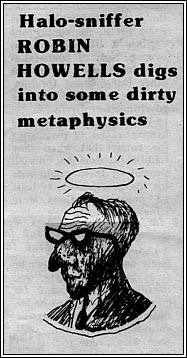

|
ONE
OF Australia's most progressive churches, the Unitarian Peace
Memorial church in East Melbourne, has seen its congregation
split by internal disputes over the way in which the church
should be run.
Two ministers, Stanley Moore and Terrence Stokes, have left in
the past four years, and the minister for 22 years before them,
Victor James, has severed all connection with the church.
(James was a leading figure in the peace and anti-Vietnam
movements in the past two decades. Among his most celebrated
deeds was his defiance of Menzies by travelling to China using
his British passport when Australians were not supposed to visit
China and chairman Mao.)
The management committee has now decided not to appoint a
minister to the church.
The catalyst for the split was the takeover by a group led by
Len Cooper, an organiser with the Postal Teletechnicians union,
of the majority of positions for the management committee of the
church.
Since Cooper became acting chairman of the management committee,
two regular attenders at the church have been Vic and Vida
Little. Both were members of the original Communist party and
went with Ted Hill into the Communist party (marxist-leninist).
Vida Little worked as an organiser for Hill and when she and her
husband left Hill's party she was denounced in Vanguard,
january 30, 1975.
Vanguard stated: "We have quite definite
ideological, political and organisational differences with Mrs
Little . . . For example, we disagree with Mrs Little's
acceptance of orthodox municipal activity, trade union politics
and more lately her activities in the Unitarian church."
Cooper has used his special skills to get control for his
supporters in the Unitarian church. His sister Ms Marion Harper
now has a paid part time position with the church. A committee
meeting approved Harper as a member of the church and appointed
her office secretary
at the same meeting.
Cooper's mother and stepfather both joined the church early this
year. It is reported that at a meeting a couple of months ago 16
new members were admitted. Most of these are stated to be in
sympathy with Cooper's politics.
Late last year Len Cooper issued a document of 30 pages, plus 11
pages of appendices, which was circulated to members of the
Unitarian Peace Memorial church. Marked "Restricted",
it was entitled Unitarian church at the crossroads. It
started by saying: "The Unitarian church is going through
very troubled times. If the current problems are not solved the
church will diminish further and ultimately die."
The document then purports to analyse the ministries of the last
two ministers, Stanley Moore and Terrence Stokes. Because of the
nature of the unsubstantiated allegations made, Nation review
is unable to quote any more of the document.
The central point of the allegations was that both Stanley Moore
and Terrence Stokes were members of the Liberal party. Moore
admitted on november 29, 1972, in the Herald
|
 |

that he was
a member of the McKinnon branch of the Liberal party and Stokes
was a member of the Ivanhoe branch of the same party until he
resigned in 1971. From 1972 Stokes has been a member of the ALP.
Almost a quarter of the official voting membership of the congregation of 84 have resigned from the church
since a special meeting of the congregation was held on february
25. This was attended
by Victor James and Terrence Stokes.
At the meeting Len Cooper handed over the chairmanship to Alan
Ratcliffe so that Cooper could read from another document,
attacking Stokes and his ministry, for three quarters of an
hour. When James attempted to move that the speaker be no longer
heard, Ratcliffe would not accept the motion. James left the
meeting at that point and was followed by about 20 other
members.
James has now resigned as minister emeritus and has advised that
he has now completely severed his connections with the Melbourne
Unitarian church. It is believed that an announcement will soon
be made of the formation of a group of unitarians banded behind
James. One of the rules of the new group is expected to provide
for the political independence of all members.
Since unitarians are not required to make any profession of any
particular doctrine and no creed has been adopted by the church,
the fact that some members have attacked others for their
political attitudes is hard to follow. Unitarians believe in the
innate goodness of man and take a humanist stance. Unitarianism
is ofter referred to as the religion of reason. Yet one member
of the marxist-leninist group has stated that those who didnt
agree with their political attitudes were their enemies.
Since the marxist-leninist group grabbed control, speakers at
the church have included George Crawford, Joan Coxsedge, John
Halfpenny, Len Cooper, Peter Abrehart and Vic Little. It is said
that the M-L group are enrolling new members so that control
stays in their hands.
Assets of the church include investments in giltedged securities
of over $100,000 plus the property at East Melbourne, which is
conservatively estimated at $250,000.
|